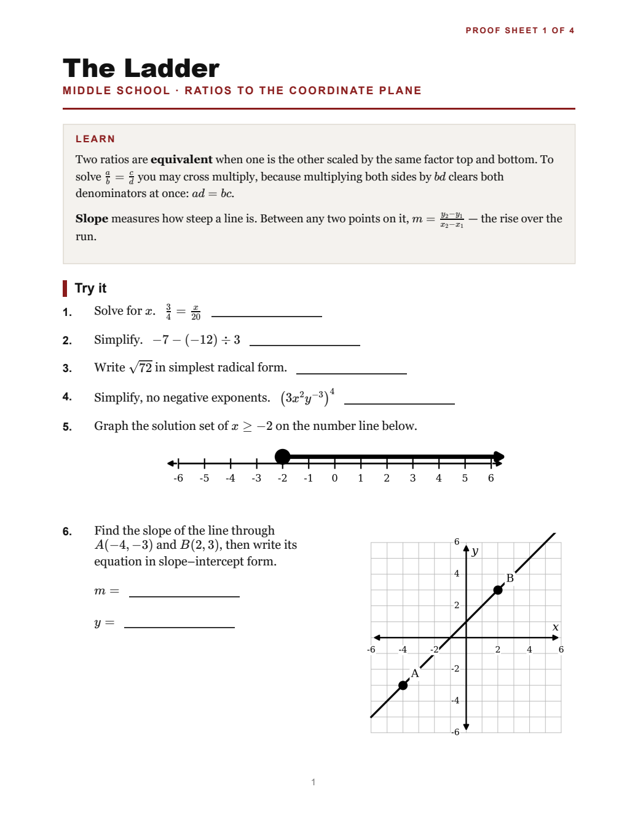
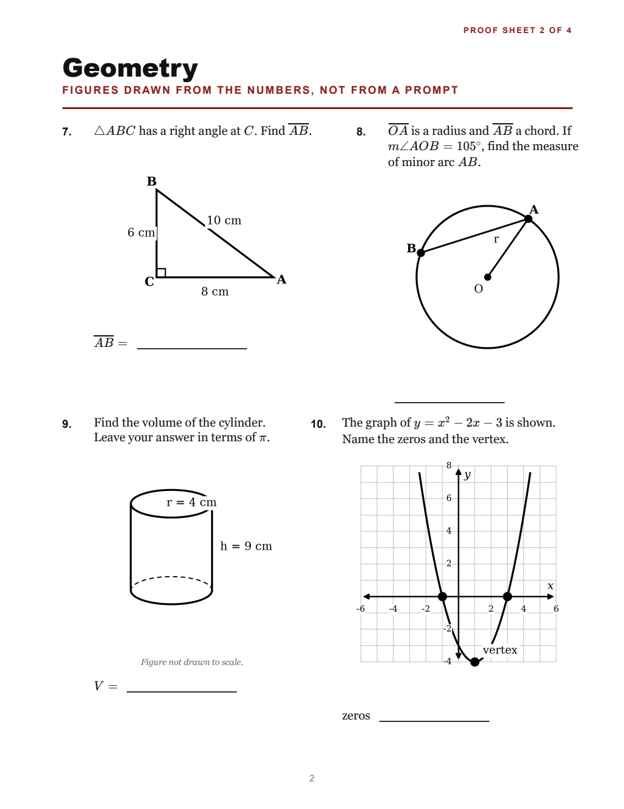
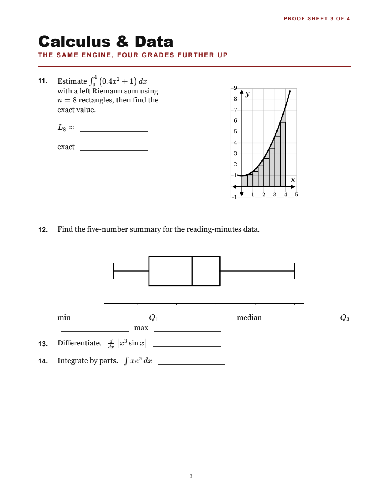
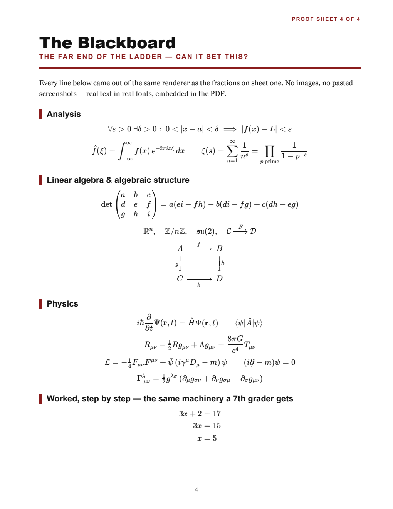

Home / Samples
The actual paperThe proof sheet
Five printable pages, built by one command. Every figure measured, every answer computed, every font embedded. This is the thing the whole machine exists to produce.




Page 4 is the stress test
Not a product. Page four sets a commutative diagram, the Einstein field equations, the Christoffel symbols, the Riemann zeta function as an infinite product, and the equation describing how light and matter interact — all from the same renderer that set the fractions on page one.
The point isn’t that anyone will sell it. The point is that if the machine can set the equations physicists argue about, a seventh-grade proportion is nothing. It’s in the PDF.
One command
The build fails loudly if any gate goes red. It does not print a broken page and tell you it succeeded — that was the whole lesson of the first night.
What this page fills up with
As the board turns green, the worked problem for each standard lands here — one clean sheet per standard, student page and answer key, with the figure and the computed key that passed the gates.
Then the first real product: a sixth- and seventh-grade set that covers a whole grade band instead of a sampler.